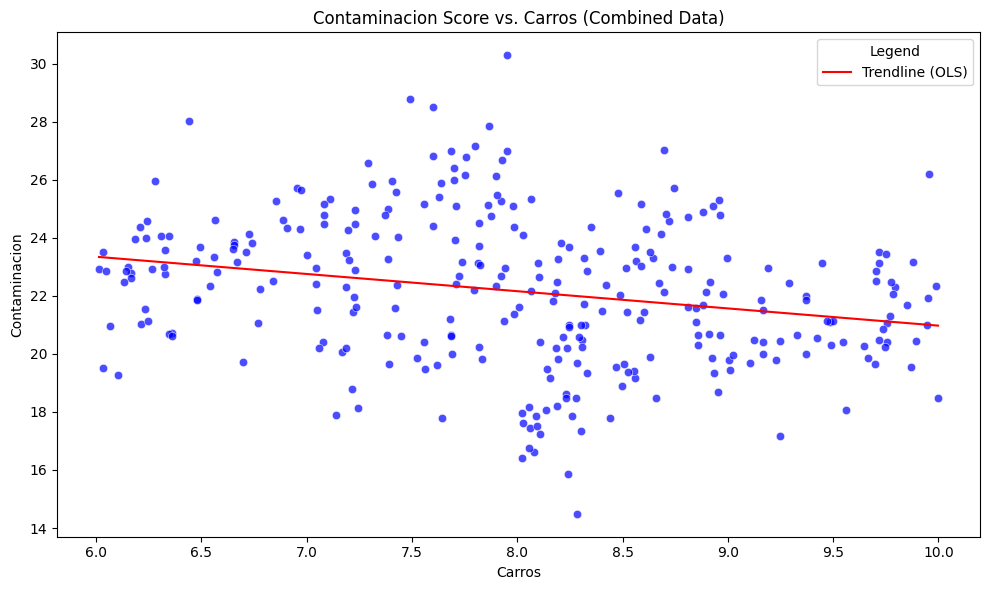
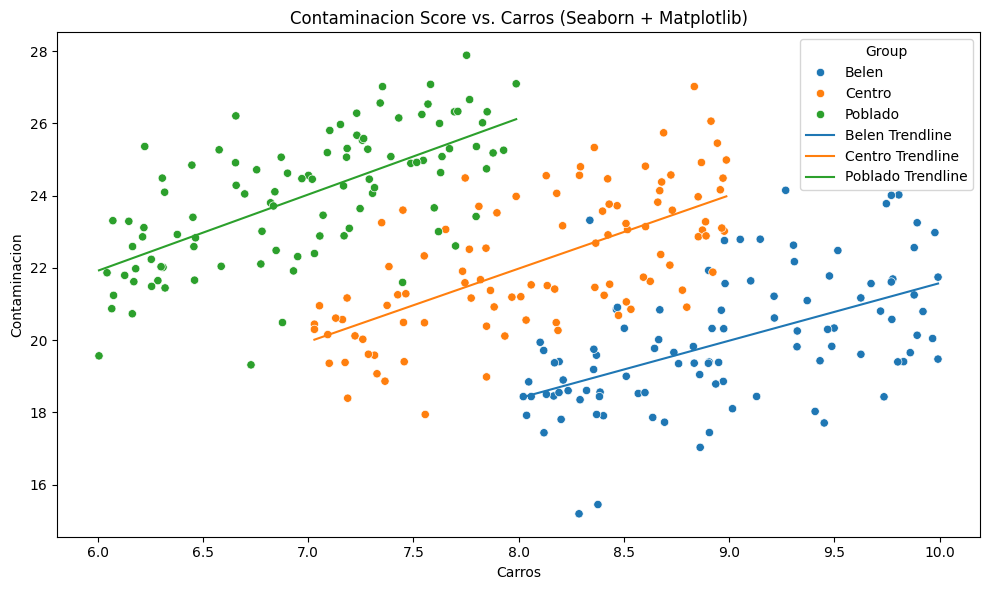
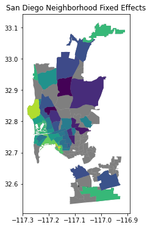

Créditos: El contenido de este cuaderno ha sido tomado de varias fuentes, pero especialmente de Dani Arribas-Bel - University of Liverpool y Sergio Rey - Center for Geospatial Sciences, University of California, Riverside. El compilador se disculpa por cualquier omisión involuntaria y estaría encantado de agregar un reconocimiento.
Modelos de Regresión para Heterogeneidad Espacial#
Objetivos de aprendizaje#
Al finalizar este notebook, el estudiante será capaz de:
Comprender la diferencia entre efectos fijos y efectos aleatorios en modelos jerárquicos/multinivel.
Especificar modelos con intercepto aleatorio y pendientes aleatorias por grupo en R (
lme4, INLA).Calcular e interpretar el Coeficiente de Correlación Intraclase (ICC).
Aplicar modelos jerárquicos logísticos al dataset de cuencas para modelar la presencia/ausencia de deslizamientos.
Evaluar el modelo con pseudo-R², curva ROC y análisis de los efectos aleatorios estimados.
Requisitos previos: 09_SpatialRegression — regresión lineal espacial; 04_GLMPhyton — GLM logístico; R básico con lme4.
La heterogeneidad espacial es una característica fundamental de los datos geoespaciales y suponen importantes desafíos para los modelos estadísticos convencionales (Anselin 1988, Cressie 2015, Lesage 2009). La heterogeneidad espacial se refiere a la variabilidad de las condiciones del terreno a lo largo del espacio (Anselin 1990). Por ejemplo, las propiedades geomorfológicas de una ladera pueden diferir sustancialmente de las de otra dentro de una misma cuenca, afectando la susceptibilidad de cada zona a los movimientos en masa. Ignorar esta heterogeneidad del espacio puede llevar a una subestimación o sobrestimación de la susceptibilidad en ciertas zonas del área de estudio.
Para abordar estas limitaciones, se han desarrollado modelos que permiten la variación espacial de los coeficientes de las variables predictoras, permitiendo capturar la heterogeneidad inherente al terreno (Rey et al. 2023). Entre estos enfoques se encuentran los modelos multiniveles (Wong 1985) (también conocidos como jerárquicos, y en algunos casos modelos mixtos o regímenes espaciales) y los modelos de regresión espacial ponderada (GWR, por sus siglas en inglés) (Brunsdon 1996). Los modelos multiniveles permiten modelar la variabilidad espacial mediante la introducción de estructuras jerárquicas, asignando un coeficiente e intercepto para cada nivel o región incorporada en el modelo. Lo cual resulta particularmente útil cuando los datos presentan una organización natural en grupos o niveles (por ejemplo, cuencas y subcuencas). Estos nos permiten modelar explícitamente tanto los efectos a nivel poblacional (efectos fijos) como las desviaciones específicas por grupo (efectos aleatorios), capturando la variabilidad estructurada de los datos en lugar de forzar a que todas las observaciones se comporten como si fueran independientes. Los modelos de efectos mixtos son adecuados para analizar datos correlacionados o anidados, proporcionando una inferencia más precisa y una mejor representación de estructuras complejas del mundo real. En un modelo con efectos mixtos, tenemos:
Efectos fijos: Son los factores que afectan a todo tu área de estudio por igual. Por ejemplo, el impacto general de la intensidad de la lluvia o la pendiente en la probabilidad de un deslizamiento.
Efectos aleatorios: Son los ajustes que haces según la unidad de agrupación. Si tu «grupo» es la formación geológica, el efecto aleatorio capturaría si una formación específica es intrínsecamente más inestable de lo que predecirían los efectos fijos globales.
En este caso los «residuales» son varios, porque existen dos fuentes de variación:(i) Variación entre grupos (efectos aleatorios \(u_j\)). (ii) Variación dentro del grupo (errores residuales \(\epsilon_{ij}\)). Por lo tanto existen:
Residuales condicionales (también conocidos como residuales de nivel 1): Estos tienen en cuenta tanto los efectos fijos como los aleatorios.
\[\epsilon_{ij} = y_{ij} - \hat{y}_{ij}\]donde \(\hat{y}_{ij} = X_{ij}\hat{\beta} + Z_{ij}\hat{u}_j\).
Residuales marginales: Aquí ignoramos los efectos aleatorios; por lo tanto, capturan la variación que no es explicada únicamente por los efectos fijos.
\[r_{ij} = y_{ij} - X_{ij}\hat{\beta}\]Efectos aleatorios (BLUPs): Estos son los «residuales» estimados a nivel de grupo (mejores predicciones lineales insesgadas o Best Linear Unbiased Predictions).
\(\hat{u}_j\).
En contraste, los modelos GWR son menos complejos computacionalmente, ya que no requieren definir niveles jerárquicos. Los modelos GWR permiten que los coeficientes de las variables predictoras varíen para cada observación, proporcionando una caracterización más detallada de la influencia de las variables en función de su localización geográfica. Ambos enfoques presentan ventajas significativas frente a los modelos tradicionales, al capturar la variabilidad espacial, mejorando la precisión en la evaluación de la susceptibilidad a movimientos en masa.
Regímenes Espaciales#
En el siguiente ejemplo queremos conocer la relación que hay entre el número de carros y los niveles de contaminación en una ciudad. En el análisis inicial se desconoce en el análisis las comunas de la ciudad, en este caso Belén, Centro y el Poblado. Los resultados indican que a mayor número de carros menores valores de contaminación.
import numpy as np
import pandas as pd
import seaborn as sns
import matplotlib.pyplot as plt
import statsmodels.api as sm
# Data generation
group_a = pd.DataFrame({
"Group": "Belen",
"Carros": np.random.uniform(8, 10, 100),
})
group_a["Contaminacion"] = 2 + (2 * group_a["Carros"]) + np.random.normal(0, 1.5, 100)
group_b = pd.DataFrame({
"Group": "Centro",
"Carros": np.random.uniform(7, 9, 100),
})
group_b["Contaminacion"] = 6 + (2 * group_b["Carros"]) + np.random.normal(0, 1.5, 100)
group_c = pd.DataFrame({
"Group": "Poblado",
"Carros": np.random.uniform(6, 8, 100),
})
group_c["Contaminacion"] = 10 + (2 * group_c["Carros"]) + np.random.normal(0, 1.5, 100)
# Combine data
data = pd.concat([group_a, group_b, group_c], ignore_index=True)
# Create scatter plot using Seaborn
plt.figure(figsize=(10, 6))
sns.scatterplot(data=data, x="Carros", y="Contaminacion", color="blue", alpha=0.7)
# Fit a single trendline for all data
X = data["Carros"]
y = data["Contaminacion"]
X = sm.add_constant(X) # Agregar una constante para el intercepto
model = sm.OLS(y, X).fit()
# Plot the trendline
trend_x = np.linspace(data["Carros"].min(), data["Carros"].max(), 100)
trend_y = model.predict(sm.add_constant(trend_x))
plt.plot(trend_x, trend_y, color="red", label="Trendline (OLS)")
# Customize plot
plt.title("Contaminacion Score vs. Carros (Combined Data)")
plt.xlabel("Carros")
plt.ylabel("Contaminacion")
plt.legend(title="Legend")
plt.tight_layout()
plt.show()

Pero si incorporamos en el análisis la variable comuna, lo que significa que cada comuna tiene sus condiciones particulares, y realizamos una regresión para cada grupo de datos, los resultados del análisis cambian completamente.
# Create scatter plot using Seaborn
plt.figure(figsize=(10, 6))
sns.scatterplot(data=data, x="Carros", y="Contaminacion", hue="Group")
# Ajustar y dibujar líneas de tendencia separadas para cada grupo
groups = data["Group"].unique()
for group in groups:
group_data = data[data["Group"] == group]
X = group_data["Carros"]
y = group_data["Contaminacion"]
# Fit linear model
X = sm.add_constant(X) # Agregar una constante para el intercepto
model = sm.OLS(y, X).fit()
# Plot the trendline
trend_x = np.linspace(group_data["Carros"].min(), group_data["Carros"].max(), 100)
trend_y = model.predict(sm.add_constant(trend_x))
plt.plot(trend_x, trend_y, label=f"{group} Trendline")
# Customize plot
plt.title("Contaminacion Score vs. Carros (Seaborn + Matplotlib)")
plt.xlabel("Carros")
plt.ylabel("Contaminacion")
plt.legend(title="Group")
plt.tight_layout()
plt.show()

Cómo podemos entonces realizar uan regresión donde tome todos los datos y los elementos que comparten en común, pero que al mismo tiempo considere los cambios espaciales que hay por regiones.
Intercepto variable (Efectos fijos espaciales)#
Mientras asumimos que nuestra variable de proximidad podría representar un premium difícil de medir que las personas pagan cuando están cerca de una zona recreativa. Sin embargo, no todos los vecindarios son iguales; algunos vecindarios pueden ser más lucrativos que otros, independientemente de su proximidad a Balboa Park. Cuando este es el caso, necesitamos alguna forma de tener en cuenta el hecho de que cada vecindario puede experimentar estos tipos de efectos gestalt, únicos. Una forma de hacerlo es capturando la heterogeneidad espacial. En su forma más básica, la heterogeneidad espacial significa que partes del modelo pueden cambiar en diferentes lugares. Por ejemplo, los cambios en la intercepción, \(\alpha\), pueden reflejar el hecho de que diferentes áreas tienen exposiciones basales diferentes a un proceso dado. Los cambios en los términos de pendiente, \(\beta\), pueden indicar algún tipo de factor mediador geográfico, como cuando una política gubernamental no se aplica de manera consistente en todas las jurisdicciones. Finalmente, los cambios en la varianza de los residuos, comúnmente denotada como \(\sigma^2\), pueden introducir heterocedasticidad espacial.
Para ilustrar los efectos fijos espaciales, consideremos el ejemplo del precio de las casas de la sección anterior para introducir una ilustración más general de «espacio como proxy». Dado que solo estamos incluyendo dos variables explicativas en el modelo, es probable que estemos omitiendo algunos factores importantes que juegan un papel en la determinación del precio al que se vende una casa. Algunos de ellos, sin embargo, es probable que varíen sistemáticamente en el espacio (por ejemplo, diferentes características del vecindario). Si ese es el caso, podemos controlar esos factores no observados utilizando variables dummy tradicionales pero basando su creación en una regla espacial. Por ejemplo, incluyamos una variable binaria para cada vecindario, indicando si una casa dada se encuentra dentro de dicho área (1) o no (0). Matemáticamente, ahora estamos ajustando la siguiente ecuación:
donde la principal diferencia es que ahora estamos permitiendo que el término constante, \(\alpha\), varíe por vecindario \(r\), \(\alpha_r\).
Programáticamente, mostraremos dos formas diferentes de estimar esto: uno, usando statsmodels; y dos, con PySAL. Primero, usaremos statsmodels. Este paquete proporciona una API similar a la de fórmulas, que nos permite expresar la ecuación que deseamos estimar directamente:
%matplotlib inline
import spreg
from libpysal import weights
import esda
from scipy import stats
import statsmodels.formula.api as sm
import numpy
import pandas as pd
import geopandas as gpd
import matplotlib.pyplot as plt
import seaborn as sbn
db = gpd.read_file('https://raw.githubusercontent.com/gdsbook/book/main/data/airbnb/regression_db.geojson')
db.info()
<class 'geopandas.geodataframe.GeoDataFrame'>
RangeIndex: 6110 entries, 0 to 6109
Data columns (total 20 columns):
# Column Non-Null Count Dtype
--- ------ -------------- -----
0 accommodates 6110 non-null int64
1 bathrooms 6110 non-null float64
2 bedrooms 6110 non-null float64
3 beds 6110 non-null float64
4 neighborhood 6110 non-null object
5 pool 6110 non-null int64
6 d2balboa 6110 non-null float64
7 coastal 6110 non-null int64
8 price 6110 non-null float64
9 log_price 6110 non-null float64
10 id 6110 non-null int64
11 pg_Apartment 6110 non-null int64
12 pg_Condominium 6110 non-null int64
13 pg_House 6110 non-null int64
14 pg_Other 6110 non-null int64
15 pg_Townhouse 6110 non-null int64
16 rt_Entire_home/apt 6110 non-null int64
17 rt_Private_room 6110 non-null int64
18 rt_Shared_room 6110 non-null int64
19 geometry 6110 non-null geometry
dtypes: float64(6), geometry(1), int64(12), object(1)
memory usage: 954.8+ KB
db.plot()
<Axes: >

db.head(2)
| accommodates | bathrooms | bedrooms | beds | neighborhood | pool | d2balboa | coastal | price | log_price | id | pg_Apartment | pg_Condominium | pg_House | pg_Other | pg_Townhouse | rt_Entire_home/apt | rt_Private_room | rt_Shared_room | geometry | |
|---|---|---|---|---|---|---|---|---|---|---|---|---|---|---|---|---|---|---|---|---|
| 0 | 5 | 2.0 | 2.0 | 2.0 | North Hills | 0 | 2.972077 | 0 | 425.0 | 6.052089 | 6 | 0 | 0 | 1 | 0 | 0 | 1 | 0 | 0 | POINT (-117.12971 32.75399) |
| 1 | 6 | 1.0 | 2.0 | 4.0 | Mission Bay | 0 | 11.501385 | 1 | 205.0 | 5.323010 | 5570 | 0 | 1 | 0 | 0 | 0 | 1 | 0 | 0 | POINT (-117.25253 32.78421) |
Estas son las variables explicativas que utilizaremos a lo largo de este ejemplo.
variable_names = ['accommodates', 'bathrooms', 'bedrooms', 'beds', 'rt_Private_room', 'rt_Shared_room', 'pg_Condominium', 'pg_House', 'pg_Other', 'pg_Townhouse']
El operador tilde en esta declaración suele leerse como «el precio logarítmico es una función de …», para tener en cuenta el hecho de que se pueden ajustar muchas especificaciones de modelo diferentes según esa relación funcional entre log_price y nuestra lista de covariables. Es importante destacar que el término -1 al final significa que estamos ajustando este modelo sin un término de intercepción. Esto es necesario, ya que incluir un término de intercepción junto con medias únicas para cada vecindario haría que el sistema subyacente de ecuaciones estuviera subespecificado.
Usando esta expresión, podemos estimar los efectos únicos de cada vecindario, ajustando el modelo en statsmodels:
m3 = sm.ols("log_price ~ accommodates + bathrooms + bedrooms + beds + rt_Private_room + rt_Shared_room + pg_Condominium + pg_House + pg_Other + pg_Townhouse + neighborhood - 1", data=db).fit()
print(m3.summary2())
Results: Ordinary least squares
======================================================================================
Model: OLS Adj. R-squared: 0.709
Dependent Variable: log_price AIC: 7229.6640
Date: 2024-10-11 17:58 BIC: 7599.1365
No. Observations: 6110 Log-Likelihood: -3559.8
Df Model: 54 F-statistic: 276.9
Df Residuals: 6055 Prob (F-statistic): 0.00
R-squared: 0.712 Scale: 0.18946
--------------------------------------------------------------------------------------
Coef. Std.Err. t P>|t| [0.025 0.975]
--------------------------------------------------------------------------------------
neighborhood[Balboa Park] 4.2808 0.0333 128.5836 0.0000 4.2155 4.3460
neighborhood[Bay Ho] 4.1983 0.0769 54.6089 0.0000 4.0475 4.3490
neighborhood[Bay Park] 4.3292 0.0510 84.9084 0.0000 4.2293 4.4292
neighborhood[Carmel Valley] 4.3893 0.0566 77.6126 0.0000 4.2784 4.5001
neighborhood[City Heights West] 4.0535 0.0584 69.4358 0.0000 3.9391 4.1680
neighborhood[Clairemont Mesa] 4.0953 0.0477 85.8559 0.0000 4.0018 4.1888
neighborhood[College Area] 4.0337 0.0583 69.2386 0.0000 3.9195 4.1479
neighborhood[Core] 4.7262 0.0526 89.7775 0.0000 4.6230 4.8294
neighborhood[Cortez Hill] 4.6081 0.0515 89.4322 0.0000 4.5071 4.7091
neighborhood[Del Mar Heights] 4.4969 0.0543 82.7599 0.0000 4.3904 4.6034
neighborhood[East Village] 4.5455 0.0294 154.7473 0.0000 4.4879 4.6031
neighborhood[Gaslamp Quarter] 4.7758 0.0473 100.9589 0.0000 4.6831 4.8685
neighborhood[Grant Hill] 4.3067 0.0524 82.2442 0.0000 4.2041 4.4094
neighborhood[Grantville] 4.0533 0.0714 56.7719 0.0000 3.9133 4.1933
neighborhood[Kensington] 4.3027 0.0772 55.7511 0.0000 4.1514 4.4540
neighborhood[La Jolla] 4.6821 0.0258 181.4137 0.0000 4.6315 4.7327
neighborhood[La Jolla Village] 4.3303 0.0772 56.0653 0.0000 4.1789 4.4817
neighborhood[Linda Vista] 4.1911 0.0569 73.6380 0.0000 4.0796 4.3027
neighborhood[Little Italy] 4.6667 0.0468 99.6364 0.0000 4.5749 4.7586
neighborhood[Loma Portal] 4.3019 0.0332 129.4346 0.0000 4.2368 4.3671
neighborhood[Marina] 4.5583 0.0480 94.9761 0.0000 4.4642 4.6524
neighborhood[Midtown] 4.3667 0.0284 153.7902 0.0000 4.3110 4.4223
neighborhood[Midtown District] 4.5849 0.0651 70.4436 0.0000 4.4573 4.7125
neighborhood[Mira Mesa] 3.9896 0.0561 71.1135 0.0000 3.8796 4.0995
neighborhood[Mission Bay] 4.5155 0.0224 201.3850 0.0000 4.4715 4.5594
neighborhood[Mission Valley] 4.2760 0.0742 57.6031 0.0000 4.1304 4.4215
neighborhood[Moreno Mission] 4.4009 0.0567 77.5773 0.0000 4.2897 4.5122
neighborhood[Normal Heights] 4.0974 0.0490 83.5821 0.0000 4.0013 4.1935
neighborhood[North Clairemont] 3.9844 0.0691 57.6209 0.0000 3.8489 4.1200
neighborhood[North Hills] 4.2534 0.0255 166.9470 0.0000 4.2035 4.3034
neighborhood[Northwest] 4.1738 0.0697 59.8572 0.0000 4.0371 4.3104
neighborhood[Ocean Beach] 4.4372 0.0301 147.4709 0.0000 4.3782 4.4961
neighborhood[Old Town] 4.4202 0.0419 105.5098 0.0000 4.3380 4.5023
neighborhood[Otay Ranch] 4.1859 0.0816 51.2999 0.0000 4.0260 4.3459
neighborhood[Pacific Beach] 4.4388 0.0224 198.0136 0.0000 4.3949 4.4828
neighborhood[Park West] 4.4409 0.0448 99.1988 0.0000 4.3531 4.5287
neighborhood[Rancho Bernadino] 4.1809 0.0720 58.0598 0.0000 4.0397 4.3221
neighborhood[Rancho Penasquitos] 4.1624 0.0618 67.3789 0.0000 4.0413 4.2835
neighborhood[Roseville] 4.3870 0.0586 74.8346 0.0000 4.2721 4.5019
neighborhood[San Carlos] 4.3350 0.0830 52.2035 0.0000 4.1722 4.4978
neighborhood[Scripps Ranch] 4.0824 0.0762 53.5440 0.0000 3.9329 4.2318
neighborhood[Serra Mesa] 4.3130 0.0599 71.9725 0.0000 4.1955 4.4304
neighborhood[South Park] 4.2253 0.0536 78.7676 0.0000 4.1202 4.3305
neighborhood[University City] 4.1937 0.0370 113.4516 0.0000 4.1213 4.2662
neighborhood[West University Heights] 4.2977 0.0431 99.6359 0.0000 4.2131 4.3822
accommodates 0.0728 0.0048 15.0672 0.0000 0.0633 0.0822
bathrooms 0.1702 0.0105 16.2171 0.0000 0.1496 0.1908
bedrooms 0.1686 0.0106 15.8731 0.0000 0.1478 0.1894
beds -0.0416 0.0065 -6.3508 0.0000 -0.0544 -0.0287
rt_Private_room -0.4873 0.0154 -31.6225 0.0000 -0.5175 -0.4570
rt_Shared_room -1.2396 0.0368 -33.6657 0.0000 -1.3118 -1.1674
pg_Condominium 0.1329 0.0210 6.3333 0.0000 0.0918 0.1741
pg_House 0.0400 0.0144 2.7868 0.0053 0.0119 0.0681
pg_Other 0.0610 0.0224 2.7290 0.0064 0.0172 0.1048
pg_Townhouse -0.0075 0.0324 -0.2323 0.8163 -0.0710 0.0560
--------------------------------------------------------------------------------------
Omnibus: 1215.551 Durbin-Watson: 1.835
Prob(Omnibus): 0.000 Jarque-Bera (JB): 4115.510
Skew: 0.989 Prob(JB): 0.000
Kurtosis: 6.500 Condition No.: 132
======================================================================================
Notes:
[1] Standard Errors assume that the covariance matrix of the errors is correctly
specified.
El enfoque anterior muestra cómo los Efectos Fijos Espaciales (FE) son un caso particular de una regresión lineal con una variable categórica. La pertenencia al vecindario se modela utilizando variables ficticias binarias. Gracias a la gramática de fórmulas utilizada en statsmodels, podemos expresar el modelo de manera abstracta, y Python lo analiza, creando apropiadamente variables binarias según sea necesario.
El segundo enfoque aprovecha la funcionalidad de Regímenes de PySAL, que permite al usuario especificar qué variables se estiman por separado para cada «régimen». Sin embargo, en este caso, en lugar de describir el modelo en una fórmula, necesitamos pasar cada elemento del modelo como argumentos separados.
# PySAL implementation
m4 = spreg.OLS_Regimes(db[['log_price']].values, db[variable_names].values,
db['neighborhood'].tolist(),
constant_regi='many', cols2regi=[False]*len(variable_names),
regime_err_sep=False,
name_y='log_price', name_x=variable_names)
print(m4.summary)
REGRESSION RESULTS
------------------
SUMMARY OF OUTPUT: ORDINARY LEAST SQUARES - REGIMES
---------------------------------------------------
Data set : unknown
Weights matrix : None
Dependent Variable : log_price Number of Observations: 6110
Mean dependent var : 4.9958 Number of Variables : 55
S.D. dependent var : 0.8072 Degrees of Freedom : 6055
R-squared : 0.7118
Adjusted R-squared : 0.7092
Sum squared residual: 1147.17 F-statistic : 276.9408
Sigma-square : 0.189 Prob(F-statistic) : 0
S.E. of regression : 0.435 Log likelihood : -3559.832
Sigma-square ML : 0.188 Akaike info criterion : 7229.664
S.E of regression ML: 0.4333 Schwarz criterion : 7599.137
------------------------------------------------------------------------------------
Variable Coefficient Std.Error t-Statistic Probability
------------------------------------------------------------------------------------
Balboa Park_CONSTANT 4.28077 0.03329 128.58356 0.00000
Bay Ho_CONSTANT 4.19825 0.07688 54.60895 0.00000
Bay Park_CONSTANT 4.32922 0.05099 84.90837 0.00000
Carmel Valley_CONSTANT 4.38926 0.05655 77.61256 0.00000
City Heights West_CONSTANT 4.05352 0.05838 69.43577 0.00000
Clairemont Mesa_CONSTANT 4.09526 0.04770 85.85587 0.00000
College Area_CONSTANT 4.03370 0.05826 69.23864 0.00000
Core_CONSTANT 4.72619 0.05264 89.77752 0.00000
Cortez Hill_CONSTANT 4.60809 0.05153 89.43222 0.00000
Del Mar Heights_CONSTANT 4.49691 0.05434 82.75991 0.00000
East Village_CONSTANT 4.54547 0.02937 154.74732 0.00000
Gaslamp Quarter_CONSTANT 4.77580 0.04730 100.95890 0.00000
Grant Hill_CONSTANT 4.30674 0.05237 82.24417 0.00000
Grantville_CONSTANT 4.05330 0.07140 56.77190 0.00000
Kensington_CONSTANT 4.30267 0.07718 55.75107 0.00000
La Jolla_CONSTANT 4.68208 0.02581 181.41370 0.00000
La Jolla Village_CONSTANT 4.33031 0.07724 56.06529 0.00000
Linda Vista_CONSTANT 4.19115 0.05692 73.63804 0.00000
Little Italy_CONSTANT 4.66674 0.04684 99.63639 0.00000
Loma Portal_CONSTANT 4.30191 0.03324 129.43462 0.00000
Marina_CONSTANT 4.55830 0.04799 94.97614 0.00000
Midtown_CONSTANT 4.36666 0.02839 153.79023 0.00000
Midtown District_CONSTANT 4.58494 0.06509 70.44363 0.00000
Mira Mesa_CONSTANT 3.98956 0.05610 71.11354 0.00000
Mission Bay_CONSTANT 4.51548 0.02242 201.38497 0.00000
Mission Valley_CONSTANT 4.27596 0.07423 57.60306 0.00000
Moreno Mission_CONSTANT 4.40094 0.05673 77.57731 0.00000
Normal Heights_CONSTANT 4.09740 0.04902 83.58206 0.00000
North Clairemont_CONSTANT 3.98444 0.06915 57.62089 0.00000
North Hills_CONSTANT 4.25343 0.02548 166.94700 0.00000
Northwest_CONSTANT 4.17375 0.06973 59.85725 0.00000
Ocean Beach_CONSTANT 4.43716 0.03009 147.47094 0.00000
Old Town_CONSTANT 4.42016 0.04189 105.50980 0.00000
Otay Ranch_CONSTANT 4.18594 0.08160 51.29992 0.00000
Pacific Beach_CONSTANT 4.43883 0.02242 198.01360 0.00000
Park West_CONSTANT 4.44091 0.04477 99.19882 0.00000
Rancho Bernadino_CONSTANT 4.18091 0.07201 58.05981 0.00000
Rancho Penasquitos_CONSTANT 4.16243 0.06178 67.37890 0.00000
Roseville_CONSTANT 4.38699 0.05862 74.83461 0.00000
San Carlos_CONSTANT 4.33499 0.08304 52.20349 0.00000
Scripps Ranch_CONSTANT 4.08238 0.07624 53.54397 0.00000
Serra Mesa_CONSTANT 4.31297 0.05993 71.97253 0.00000
South Park_CONSTANT 4.22531 0.05364 78.76758 0.00000
University City_CONSTANT 4.19372 0.03696 113.45160 0.00000
West University Heights_CONSTANT 4.29767 0.04313 99.63589 0.00000
_Global_accommodates 0.07278 0.00483 15.06719 0.00000
_Global_bathrooms 0.17021 0.01050 16.21714 0.00000
_Global_bedrooms 0.16857 0.01062 15.87313 0.00000
_Global_beds -0.04158 0.00655 -6.35076 0.00000
_Global_rt_Private_room -0.48725 0.01541 -31.62250 0.00000
_Global_rt_Shared_room -1.23959 0.03682 -33.66570 0.00000
_Global_pg_Condominium 0.13293 0.02099 6.33332 0.00000
_Global_pg_House 0.04000 0.01435 2.78679 0.00534
_Global_pg_Other 0.06101 0.02236 2.72901 0.00637
_Global_pg_Townhouse -0.00753 0.03239 -0.23234 0.81628
------------------------------------------------------------------------------------
Regimes variable: unknown
REGIMES DIAGNOSTICS - CHOW TEST
VARIABLE DF VALUE PROB
CONSTANT 44 913.016 0.0000
Global test 44 913.016 0.0000
REGRESSION DIAGNOSTICS
MULTICOLLINEARITY CONDITION NUMBER 12.143
TEST ON NORMALITY OF ERRORS
TEST DF VALUE PROB
Jarque-Bera 2 4115.510 0.0000
DIAGNOSTICS FOR HETEROSKEDASTICITY
RANDOM COEFFICIENTS
TEST DF VALUE PROB
Breusch-Pagan test 54 854.587 0.0000
Koenker-Bassett test 54 310.744 0.0000
================================ END OF REPORT =====================================
Hablando económicamente, lo que implican los Efectos Fijos de Vecindario que hemos introducido es que, en lugar de comparar todos los precios de las casas en San Diego como iguales, solo derivamos variación dentro de cada código postal. Recuerda que la interpretación de \(\beta_k\) es el efecto de la variable \(k\), dado que todas las demás variables explicativas incluidas permanecen constantes. Al incluir una sola variable para cada área, estamos forzando efectivamente al modelo a comparar como iguales solo los precios de las casas que comparten el mismo valor para cada variable; o, en otras palabras, solo las casas ubicadas dentro de la misma área. La introducción de los Efectos Fijos permite un mayor grado de aislamiento de los efectos de las variables que introducimos en el modelo porque podemos controlar los efectos no observados que se alinean espacialmente con la distribución de los Efectos Fijos introducidos (por código postal, en nuestro caso).
Para hacer un mapa de los Efectos Fijos de Vecindario, necesitamos procesar ligeramente los resultados de nuestro modelo.
Primero, extraemos solo los efectos pertinentes a los vecindarios:
neighborhood_effects = m3.params.filter(like='neighborhood')
neighborhood_effects.head()
neighborhood[Balboa Park] 4.280766
neighborhood[Bay Ho] 4.198251
neighborhood[Bay Park] 4.329223
neighborhood[Carmel Valley] 4.389261
neighborhood[City Heights West] 4.053518
dtype: float64
Después, necesitamos extraer solo el nombre del vecindario del índice de esta Serie. Una forma sencilla de hacerlo es eliminar todos los caracteres que están antes y después de nuestros nombres de vecindario:
Ahora, podemos volver a unirlos con las formas de los vecindarios:
stripped = neighborhood_effects.index.str.strip('neighborhood[').str.strip(']')
neighborhood_effects.index = stripped
neighborhood_effects = neighborhood_effects.to_frame('fixed_effect')
neighborhood_effects.head()
| fixed_effect | |
|---|---|
| Balboa Park | 4.280766 |
| Bay Ho | 4.198251 |
| Bay Park | 4.329223 |
| Carmel Valley | 4.389261 |
| City Heights West | 4.053518 |
import requests
url = 'http://data.insideairbnb.com/united-states/'\
'ca/san-diego/2016-07-07/visualisations/'\
'neighbourhoods.geojson'
r = requests.get(url)
with open('neighbourhoods.geojson', 'wb') as fo:
fo.write(r.content)
neighborhoods = gpd.read_file('output.geojson')
ax = neighborhoods.plot(color='k',
alpha=0.5,
figsize=(12,6))
neighborhoods.merge(neighborhood_effects, how='left',
left_on='neighbourhoods',
right_index=True)\
.dropna(subset=['fixed_effect'])\
.plot('fixed_effect',
ax=ax)
ax.set_title("San Diego Neighborhood Fixed Effects")
plt.show()

Intercepto y coeficientes variables#
En el núcleo de la estimación de efectos fijos espaciales está la idea de que, en lugar de asumir que la variable dependiente se comporta uniformemente en el espacio, existen efectos sistemáticos que siguen un patrón geográfico y afectan su comportamiento. En otras palabras, los efectos fijos espaciales introducen econometricamente la noción de heterogeneidad espacial. Lo hacen en la forma más simple posible: al permitir que el término constante varíe geográficamente. Los demás elementos de la regresión permanecen sin cambios y, por lo tanto, se aplican uniformemente en todo el espacio. La idea de los regímenes espaciales (RE) es generalizar el enfoque de los efectos fijos espaciales para permitir que no solo el término constante varíe, sino también cualquier otra variable explicativa. Esto implica que la ecuación que estaremos estimando es:
donde no solo permitimos que el término constante varíe por región (\(\alpha_r\)), sino también cada otro parámetro (\(\beta_{k-r}\)).
Para ilustrar este enfoque, usaremos el «diferenciador espacial» de si una casa está en un vecindario costero o no (coastal_neig) para definir los regímenes. La razón detrás de esta elección es que alquilar una casa cerca del océano podría ser un factor lo suficientemente fuerte como para que las personas estén dispuestas a pagar a diferentes tasas por cada una de las características de la casa.
Para implementar esto en Python, usamos la clase OLS_Regimes en PySAL, que hace la mayor parte del trabajo pesado por nosotros:
m4 = spreg.OLS_Regimes(db[['log_price']].values, db[variable_names].values,
db['coastal'].tolist(),
constant_regi='many',
regime_err_sep=False,
name_y='log_price', name_x=variable_names)
print(m4.summary)
REGRESSION RESULTS
------------------
SUMMARY OF OUTPUT: ORDINARY LEAST SQUARES - REGIMES
---------------------------------------------------
Data set : unknown
Weights matrix : None
Dependent Variable : log_price Number of Observations: 6110
Mean dependent var : 4.9958 Number of Variables : 22
S.D. dependent var : 0.8072 Degrees of Freedom : 6088
R-squared : 0.6853
Adjusted R-squared : 0.6843
Sum squared residual: 1252.49 F-statistic : 631.4283
Sigma-square : 0.206 Prob(F-statistic) : 0
S.E. of regression : 0.454 Log likelihood : -3828.169
Sigma-square ML : 0.205 Akaike info criterion : 7700.339
S.E of regression ML: 0.4528 Schwarz criterion : 7848.128
------------------------------------------------------------------------------------
Variable Coefficient Std.Error t-Statistic Probability
------------------------------------------------------------------------------------
0_CONSTANT 4.40724 0.02152 204.83927 0.00000
0_accommodates 0.09019 0.00647 13.93113 0.00000
0_bathrooms 0.14338 0.01427 10.04879 0.00000
0_bedrooms 0.11296 0.01383 8.16956 0.00000
0_beds -0.02627 0.00884 -2.97261 0.00296
0_rt_Private_room -0.52933 0.01892 -27.98057 0.00000
0_rt_Shared_room -1.22446 0.04260 -28.74528 0.00000
0_pg_Condominium 0.10531 0.02813 3.74345 0.00018
0_pg_House -0.04545 0.01796 -2.53086 0.01140
0_pg_Other 0.06075 0.02764 2.19827 0.02797
0_pg_Townhouse -0.01040 0.04567 -0.22765 0.81993
1_CONSTANT 4.47990 0.02509 178.52600 0.00000
1_accommodates 0.04846 0.00788 6.14974 0.00000
1_bathrooms 0.24748 0.01657 14.93881 0.00000
1_bedrooms 0.18974 0.01792 10.58647 0.00000
1_beds -0.05061 0.01074 -4.71079 0.00000
1_rt_Private_room -0.55863 0.02831 -19.73097 0.00000
1_rt_Shared_room -1.05285 0.08417 -12.50800 0.00000
1_pg_Condominium 0.20445 0.03394 6.02318 0.00000
1_pg_House 0.07535 0.02338 3.22322 0.00127
1_pg_Other 0.29548 0.03865 7.64604 0.00000
1_pg_Townhouse -0.07351 0.04937 -1.48900 0.13654
------------------------------------------------------------------------------------
Regimes variable: unknown
REGIMES DIAGNOSTICS - CHOW TEST
VARIABLE DF VALUE PROB
CONSTANT 1 4.832 0.0279
accommodates 1 16.736 0.0000
bathrooms 1 22.671 0.0000
bedrooms 1 11.504 0.0007
beds 1 3.060 0.0802
rt_Private_room 1 0.740 0.3896
rt_Shared_room 1 3.309 0.0689
pg_Condominium 1 5.057 0.0245
pg_House 1 16.793 0.0000
pg_Other 1 24.410 0.0000
pg_Townhouse 1 0.881 0.3480
Global test 11 328.869 0.0000
REGRESSION DIAGNOSTICS
MULTICOLLINEARITY CONDITION NUMBER 14.033
TEST ON NORMALITY OF ERRORS
TEST DF VALUE PROB
Jarque-Bera 2 3977.425 0.0000
DIAGNOSTICS FOR HETEROSKEDASTICITY
RANDOM COEFFICIENTS
TEST DF VALUE PROB
Breusch-Pagan test 21 443.593 0.0000
Koenker-Bassett test 21 164.276 0.0000
================================ END OF REPORT =====================================
Modelos jerarquicos con R#
lme4 es la librería más utilizada en R para ajustar modelos lineales mixtos (LMMs) y modelos lineales generalizados mixtos (GLMMs). Estos modelos son fundamentales para analizar datos con estructuras jerárquicas o anidadas. lmer() se utiliza para ajustar modelos lineales mixtos, donde la variable de respuesta es continua y se asume que sigue una distribución normal, mientras glmer() se utiliza para ajustar modelos lineales generalizados mixtos, donde la variable de respuesta puede seguir otras distribuciones (como binomial, Poisson, gamma, etc.). La principal fortaleza de lme4 radica en su capacidad para modelar efectos aleatorios. Estos efectos permiten capturar la variabilidad asociada a los diferentes niveles de agrupación en los datos jerárquicos (por ejemplo, la variabilidad entre individuos, entre grupos, entre localizaciones, etc.).
Los efectos fijos (variables predictoras cuyos efectos se asumen constantes en toda la población) se incluyen de manera similar a los modelos lineales estándar (ej., variable_dependiente ~ predictor1 + predictor2). Los efectos aleatorios se añaden utilizando términos como (1 | variable_de_grupo) para un intercepto aleatorio (la media de la variable dependiente varía aleatoriamente entre los grupos definidos por variable_de_grupo), o (predictor | variable_de_grupo) para un efecto aleatorio de pendiente (el efecto del predictor varía aleatoriamente entre los grupos).
Ejemplo con datos de cuencas de la implementación de modelos jerárquicos en R#
#importar librerias
library(sf) #para importar datos geoespaciales
library(lme4) # para el modelo
library(pscl) # para calcular los R2
library(MuMIn) #para calcular los R2 en el modelo multinivel
library(ggplot2) # Plotting library
library(ggspatial) # For adding north arrow and scale to maps
library(sjPlot) #para graficar los effectos
library(dplyr) # for data manipulation
library(pROC) # for the ROC curve
library(broom)
#Cargar datos
data = st_read("https://github.com/edieraristizabal/ModeloMultinivel/raw/refs/heads/main/DATA/df_catchments_spatial.gpkg")
# Create Y_bin as 1 if lands_rec is 1 or greater, otherwise 0
data$Y_bin <- ifelse(data$lands_rec >= 1, 1, 0)
# Convert 'cuenca' to a factor (categorical variable)
data$cuenca <- as.factor(data$cuenca)
data$kmeans <- as.factor(data$kmeans)
# Ensure predictor variables are standardized
data$elev_mean_std <- scale(data$elev_mean)
data$rel_mean_std <- scale(data$rel_mean)
data$area_std <- scale(data$area)
data$rainfallAnnual_mean_std <- scale(data$rainfallAnnual_mean)
A continuación se presenta el ajuste a un modelo de regresión logística estándar, evalúa su ajuste a través de pseudo-R cuadrados, obtiene las probabilidades predichas para cada observación y extrae un resumen limpio de los coeficientes del modelo en un data frame.
# Fit the logistic regression model without random effects
m1 <- glm(
Y_bin ~ elev_mean_std + rel_mean_std + area_std + rainfallAnnual_mean_std,
data = data,
family = binomial(link = "logit")
)
# Calculate pseudo-R^2 values
pseudo_r2 <- pR2(m1)
# Fitted values for model m3
data$m1fitted <- fitted(m1)
# Extract model coefficients as a tidy data frame
model_summary <- tidy(m1) %>%
select(term, estimate, std.error, statistic, p.value) %>%
rename(
Variables = term,
Estimate = estimate,
Std_Error = std.error,
Z_value = statistic,
P_value = p.value
)
Un modelo de intercepto variable se define como:
m3_intercept_aleatorio <- glmer(
Y_bin ~ elev_mean_std + rel_mean_std + area_std + rainfallAnnual_mean_std +
(1 | cuenca),
data = data,
family = binomial(link = "logit"),
control = glmerControl(optimizer = "bobyqa", optCtrl = list(maxfun = 2e5))
)
# Print the summary of the model
summary(m3_intercept_aleatorio)
# Fitted values
data$m3fitted_intercept <- fitted(m3_intercept_aleatorio)
# Extract random intercepts
ranef_intercept <- ranef(m3_intercept_aleatorio)$cuenca
```r
El modelo m2 es un modelo multinivel o modelo jerárquico que reconoce la estructura anidada de los datos, donde las observaciones individuales (subcuencas) están agrupadas dentro de unidades más grandes (cuencas). Los coeficientes de los efectos fijos (elev_mean_std, rel_mean_std, area_std, rainfallAnnual_mean_std) representan el efecto promedio de cada uno de estos predictores sobre la probabilidad de un movimiento en masa a través de todas las cuencas. Por ejemplo, el coeficiente de elev_mean_std te diría cómo cambia, en promedio, la probabilidad de un movimiento en masa por cada unidad de aumento en la elevación media estandarizada, manteniendo las otras variables constantes. Por otro lado, los efectos aleatorios permiten que la relación entre los predictores y la probabilidad de un movimiento en masa varíe entre las diferentes cuencas. El intercepto aleatorio para cada cuenca indica que algunas cuencas pueden tener una probabilidad base de movimientos en masa inherentemente mayor o menor que el promedio general, incluso después de tener en cuenta las variables predictoras. Esto podría deberse a factores específicos de cada cuenca que no se han medido directamente. Las pendientes aleatorias indican que el impacto de cada predictor (elevación, relieve, área, precipitación) sobre la probabilidad de un movimiento en masa puede ser diferente en cada cuenca. Por ejemplo, la elevación podría ser un factor más importante en algunas cuencas que en otras, o la relación entre la precipitación y los movimientos en masa podría variar. Esto podría reflejar diferencias en la geología, el tipo de suelo, la vegetación u otras características específicas de cada cuenca.
# Fit the multilevel logistic regression model with random slopes and constant for each predictor
m2 <- glmer(
Y_bin ~ elev_mean_std + rel_mean_std + area_std + rainfallAnnual_mean_std +
(1 + elev_mean_std + rel_mean_std + area_std + rainfallAnnual_mean_std | cuenca),
data = data,
family = binomial(link = "logit"),
control = glmerControl(optimizer = "bobyqa", optCtrl = list(maxfun = 2e5))
)
# Print the summary of the model to see the results
summary(m2)
# Fitted values for model m3
data$m2fitted <- fitted(m2)
# Extract random effects from the model
ranef_data <- ranef(m2)$cuenca
Ejemplo con datos de cuencas de la implementación de modelos jerárquicos en INLA#
WEn la librearía INLA podemos incorporar los efectos aleatorios de la siguiente forma, donde m2_cuenca$summary.random$cuenca extrae y muestra un resumen específico de los efectos aleatorios para cada nivel de la variable cuenca. Esto brinda información sobre la media, la desviación estándar y los intervalos de credibilidad de la desviación del intercepto para cada cuenca.
#basic random intercept (cuenca)
m2_cuenca <- inla(lands_rec ~ 1 + RainfallDaysmean + elev_mean + slope_mean +
f(cuenca, model = "iid"),
offset=log(area), data = as.data.frame(aoi), family = "poisson",
control.predictor = list(compute = TRUE),
control.compute = list(dic = TRUE, waic = TRUE))
summary(m2_cuenca)
m2_cuenca$summary.random$cuenca
aoi$m2_cuenca <- m2_cuenca$summary.fitted[1:nrow(aoi), "mean"]
res_pearson_m2 <- (aoi$lands_rec - m2_cuenca$summary.fitted.values$mean) / sqrt(m2_cuenca$summary.fitted.values$mean)
aoi$res_pearson_m2 <- res_pearson_m2
moran_m2 <- moran.mc(x = res_pearson_m2, listw = aoi.listw,nsim = 999, alternative = "greater")
Para el intercepto y pendientes aleatorias se utiliza:
m4_intercept_pendientes_aleatorias <- inla(
lands_rec ~ 1 + RainfallDaysmean + elev_mean + slope_mean +
f(cuenca, model = "iid") + # Intercepto aleatorio
f(cuenca.RainfallDaysmean, RainfallDaysmean, model = "iid", group = cuenca) + # Pendiente aleatoria para RainfallDaysmean
f(cuenca.elev_mean, elev_mean, model = "iid", group = cuenca) + # Pendiente aleatoria para elev_mean
f(cuenca.slope_mean, slope_mean, model = "iid", group = cuenca) # Pendiente aleatoria para slope_mean,
,
offset=log(area),
data = as.data.frame(aoi),
family = "poisson",
control.predictor = list(compute = TRUE),
control.compute = list(dic = TRUE, waic = TRUE)
)
summary(m4_intercept_pendientes_aleatorias)
Actividades#
Efectos fijos vs. aleatorios: Ajusta dos modelos para el dataset de cuencas: (a) regresión logística con efectos fijos de cuenca (variables dummy), y (b) modelo jerárquico con intercepto aleatorio por cuenca. Compara el AIC, el número de parámetros y la interpretabilidad. ¿Cuándo preferirías cada enfoque?
Pendientes aleatorias: Extiende el modelo jerárquico para incluir pendientes aleatorias para
slope_meanpor cuenca. Grafica los intervalos de confianza de las pendientes para cada cuenca. ¿El efecto de la pendiente es homogéneo entre cuencas o varía significativamente?ICC (Intraclass Correlation Coefficient): Calcula el ICC del modelo con intercepto aleatorio. El ICC mide la proporción de la varianza total que se debe a diferencias entre cuencas. Si ICC = 0.3, ¿qué significa en términos de la similitud de subcuencas dentro de una misma cuenca?
Curva ROC por cuenca: Para el modelo logístico jerárquico, calcula la curva ROC y el AUC por separado para cada cuenca (Atrato, Cauca, Magdalena). ¿Varía el poder predictivo del modelo entre cuencas? ¿Qué implicaciones tiene para la aplicabilidad del modelo en distintas regiones?
Recursos adicionales#
Documentación oficial#
Lecturas recomendadas#
Gelman, A. & Hill, J. (2007). Data Analysis Using Regression and Multilevel/Hierarchical Models. Cambridge University Press.
Bates, D. et al. (2015). Fitting linear mixed-effects models using lme4. Journal of Statistical Software, 67(1), 1–48.
Snijders, T. A. B. & Bosker, R. J. (2012). Multilevel Analysis: An Introduction to Basic and Advanced Multilevel Modeling (2nd ed.). SAGE.
Nakagawa, S. & Schielzeth, H. (2013). A general and simple method for obtaining R² from generalized linear mixed-effects models. Methods in Ecology and Evolution, 4(2), 133–142.